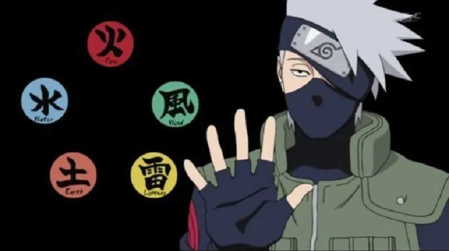

Os elementos da natureza em Naruto referem-se às Cinco Transformações Básicas de Chakra,que são a base de todo ninjutsu elemental e permitem que os shinobis manipulem o chakra alterando as propriedades de sua energia interna
Sobre a Transformação da Natureza:É uma forma avançada de controle de chakra que permite moldar e definir a natureza do próprio chakra, alterando suas propriedades e características.
É um dos dois pilares para a criação de qualquer jutsu — o outro sendo a transformação de forma (Keikashitsu Henka). A transformação de forma altera o formato e o movimento do chakra; a transformação de natureza altera sua essência.
Poucos shinobi conseguem dominar ambas simultaneamente.
Tipos de Elementos
Os elementos de chakra em Naruto são inter-relacionados e cada um possui uma força específica em relação aos outros.
De forma bem geral, o sistema de elementos em Naruto funciona como um jogo complexo de Pedra, Papel e Tesoura. Nenhum elemento é invencível sozinho; todos têm uma força e uma fraqueza natural.
Se dois jutsus de elementos diferentes com a mesma força colidirem, o elemento que tem a vantagem elemental vai vencer sempre.
É possível vencer um elemento mais forte, mas exige muito mais energia. Para o Fogo apagar a Água, por exemplo, o ataque de fogo precisa ser massivamente maior e mais intenso para evaporar a água antes de ser extinto.
Técnicas de linhagem Sanguínea
| Kekkei Genkai | Kekkei Touta | Kekkei Moura |
|---|---|---|
| Combinação de dois elementos |
Combinação de três elementos |
Combinação de todos os elementos |

Este site foi criado para reunir e organizar informações sobre o universo de Naruto, com foco em seus sistemas, habilidades, personagens e conceitos. Aqui você encontrará informações sobre jutsus, chakra, natureza dos elementos, transformações da natureza, kekkei genkai, kekkei tōta, kekkei mōra, clãs, usuários e outras habilidades presentes na obra. O objetivo é apresentar os conteúdos de forma organizada e fácil de consultar. Cada conceito pode ser explorado individualmente, permitindo entender não apenas o que uma habilidade faz, mas também sua relação com chakra, elementos, usuários e outras técnicas.